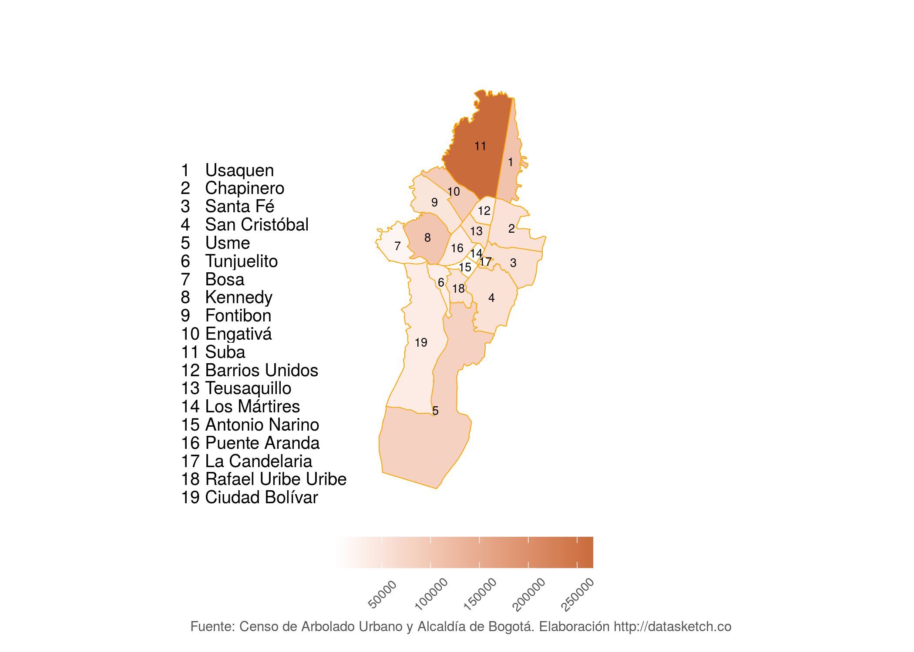
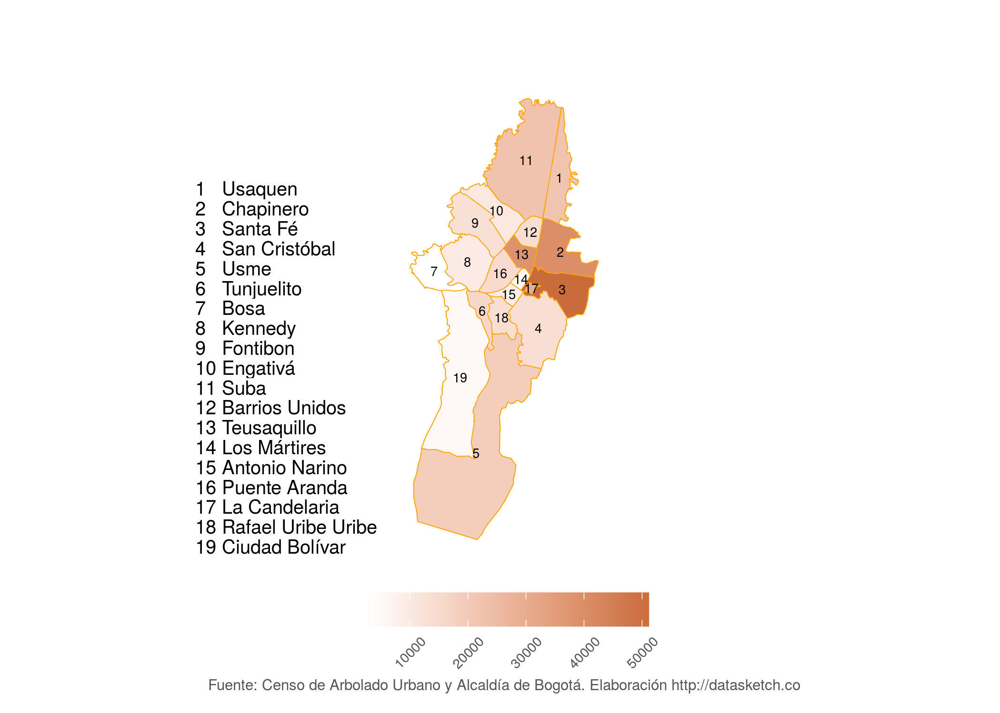
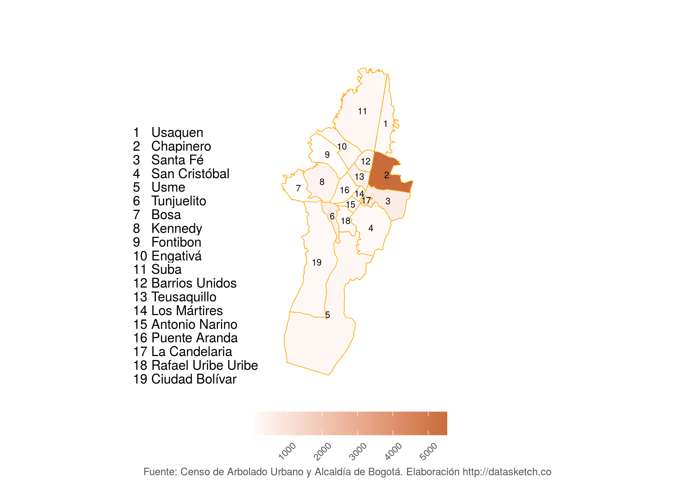
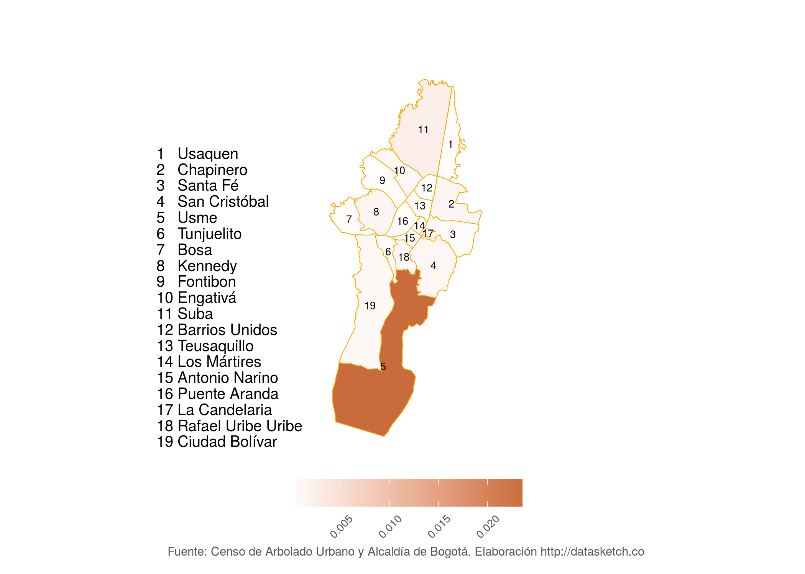
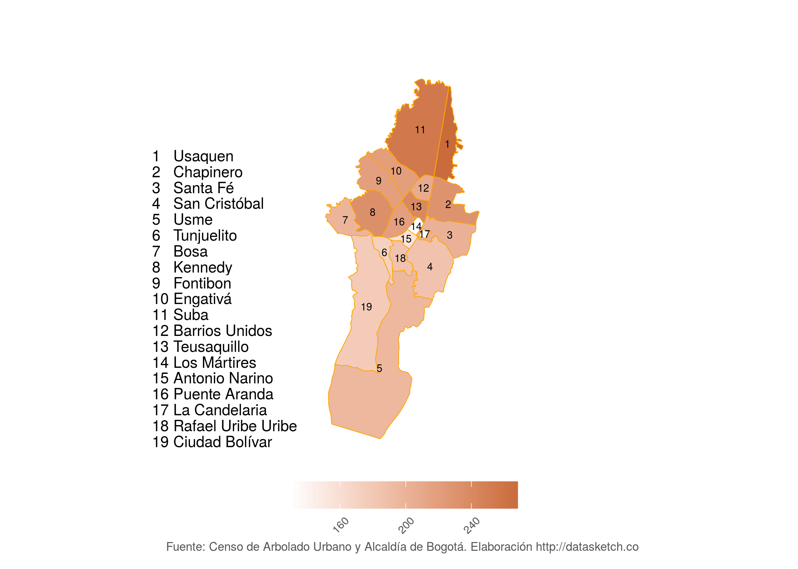

En Bogotá hay 1.2 millones de árboles públicos sembrados en vías, parques, rondas de ríos y aceras. Sin importar su tamaño o especie, no son suficientes para mitigar la huella ambiental de la ciudad ni para garantizar el bienestar de los bogotanos. ¿QUÉ HACER?
Posts Boxes
Los gigantes de bogotá están torturados

11 árboles para conocer en Bogotá

Al árbol más viejo de Bogotá le quedan 15 años de vida
Las diez cosas que debes saber sobre la arborización en Bogotá
El catálogo de árboles
Estadísticas

Carrousel
Número de árboles por localidad
Suba, Kennedy y Usaquén son las localidades que más árboles tienen sembrados en la ciudad. Esto se debe al tamaño de las mismas y a que hay más áreas con disponibilidad de zonas arborizables.

Número de árboles por cada 100.000 personas
Las localidades con más árboles por cada cien mil habitantes son Santa Fé (51.427), Chapinero ( 39.883) y Teusaquillo (38.131). Sin embargo, en ninguna se cumple la recomendación de la Organización Mundial de la Salud de tener al menos un árbol por cada tres habitantes.

Número de árboles por parques en cada localidad
Los parques son uno de los principales pulmones de la ciudad y en donde, se creería, hay más árboles. Sin embargo, lo cierto es que solo en Chapinero la mayoría de los árboles están sembrados en parques o áreas verdes. Las demás localidades no tienen tantos árboles en sus zonas verdes pues la mayoría están sembrados en vías o andenes.

Árboles de acuerdo al ingreso per capita
No es cierto que la riqueza sea sinónimo de arborización, como se cree erróneamente. Lo cierto es que si se mide el ingreso per cápita de las localidades y lo comparamos con el número de árboles sembrados, Usme es la localidad que sale a relucir. Las más pudientes, como Usaquén y Teusaquillo, están muy por debajo en la lista.

Número de especies por localidad
La mayoría de las localidades tienen más de 200 especies diferentes sembradas. La que más tiene es Usaquén (268), seguida por Suba (255) y Teusaquillo (240). Donde menos especies hay es en La Candelaria (117), Los Mártires (131) y Antonio Nariño (158).

Audio Boxes
Left side
home-audios
FOOTER
Este es un trabajo de periodismo de datos del equipo de Datasketch. Revisa cómo creamos este especial en la metodología
Todo el material en esta página es CC-BY-SA. Si reusas o adaptas recursos de esta página por favor vincula y referencia nuestro artículo o página.